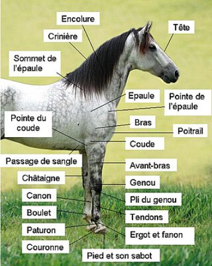

Equine anatomy encompasses the gross and microscopic anatomy of horses, ponies and other equids, including donkeys, mules and zebras. While all anatomical features of equids are described in the same terms as for other animals by the International Committee on Veterinary Gross Anatomical Nomenclature in the book Nomina Anatomica Veterinaria, there are many horse-specific colloquial terms used by equestrians.

The forehand is the part of the horse that is in front of the rider when in the saddle. The forehand consists of the head, neck, shoulders and forelimbs. She receives the indications of the superior helpers and gives the direction of the movement. Raising the forehand contributes to the balance of the school and fighting horse. It is inseparable from the lowering of the hindquarters of which it is the consequence. Its extension causes contrary to the lengthening of gaits and the displacement of the center of gravity of horse and rider forward.
